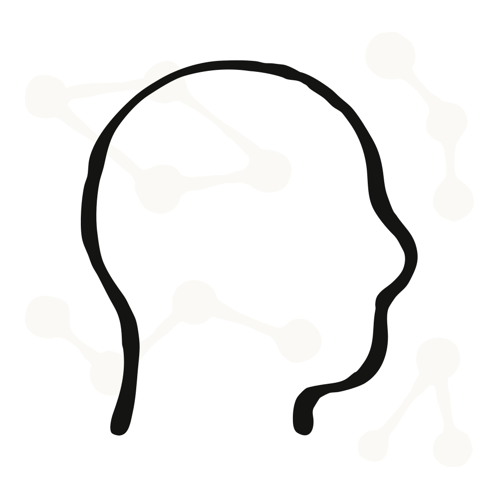

科学（Science） 2026 年 3 月 23 日

我们正在推出一个关于 AI 与科学的新博客。我们将分享在 Anthropic 及其他地方进行的工作、我们与外部研究人员和实验室的合作，并讨论科学家在研究中使用 AI 的实用工作流程。 加快科学进步的步伐是 Anthropic 使命的核心部分。《仁慈机器》（Machines of Loving Grace）描述了"压缩的 21 世纪"的前景——数十年的科学进步在短短几年内发生。我们开始看到这种压缩的早期阶段是什么样的：AI 正在帮助数学家发现新证明，帮助个别研究人员运行曾经需要专门团队的计算分析，帮助生物学家在数百万个细胞的数据集中识别功能性基因关系。 正如计算机承担了计算的任务，AI 现在正在承担_认知_的部分。作为这种转变的副作用，过去需要多年专业训练的工作正越来越能够用 AI 更快、更便宜地完成。进步的速度引发了关于科学实践和科学机构角色的社会学问题：研究学徒制应该是什么样子？当 AI 在文献生产中变得更加核心时，我们如何保持对文献的信任？当瓶颈从执行转向管理时，成为科学家究竟意味着什么？ 虽然改进的速度很快，但其中一些问题今天可能显得为时过早——AI 的科学能力在许多方面仍处于测试阶段。虽然模型在科学工作流程的某些部分看起来已经超人，但它们也可能产生幻觉结果、过度谄媚，并卡在领域从业者会觉得微不足道的问题上。菲尔兹奖得主 Timothy Gowers 很好地捕捉了这种张力，他写道，"看起来我们已经进入了一个短暂而愉快的时代：我们的研究被 AI 大大加速，但 AI 仍然需要我们。"AI 将以刚刚开始显现的方式改变科学过程。这个博客将讨论当前 AI 与科学时刻的好处和挑战，探索正在展开的兴奋。
在这个博客中，我们将分享三种主要类型的文章： * 专题（Features）：关于特定结果或工作线的文章，提供足够的细节以理解科学以及 AI 在产生它所扮演的角色。我们将发布来自 Anthropic 研究人员以及客座撰稿人和合作者的故事。 * 工作流程（Workflows）：为希望在自然和形式科学的各个领域使用 AI 的研究人员提供的实用指南。 * 领域笔记（Field notes）：跨领域发展的综述，包括值得注意的结果、新工具和开放问题。
我们在本介绍的同时发布两篇文章：Matthew Schwartz 的"Vibe physics：AI 研究生"，聚焦于通过一个真实的理论物理学计算监督 Claude，以及一篇关于为科学计算编排长期运行任务的教程。
Anthropic 有几项旨在加速科学进步的举措。我们的 AI for Science 计划为在生物学、物理学、化学和其他领域从事高影响力项目的研究人员提供 API 积分。Claude for Life Sciences致力于让 Claude 对生命科学研究人员和研发团队有用，与研究机构、制药和生物技术建立了合作伙伴关系。我们最近分享了这些计划的一些早期成果。我们还是 Genesis 使命的核心合作伙伴，这是一项横跨工业界、学术界和政府的数十亿美元计划，旨在用 AI 加速美国科学。 在这些专门努力之外，Anthropic 各地的研究人员正在努力改进我们模型的核心科学能力，并安全地加速 AI 辅助的发现。许多人来自生物物理学、化学和神经科学。我们将报道他们的工作以及该领域其他地方的努力。 如果您有想在这里看到的内容，请通过 scienceblog@anthropic.com 与我们联系。
一个未发布的 Claude 研究版本在与黎曼猜想相关的问题上取得了进展。它改进了黎曼 zeta 函数满足该猜想的零点比例这一长期存在的下界，将其从 41.6% 提高到 67.2%。 阅读更多
密码学算法。第一次攻击显著削弱了 HAWK——一种为未来量子计算机能够破解现有标准的世界而构建的数字签名方案。第二次攻击发现了一种攻击缩减轮数 AES（使用最广泛的对称密码）的新方法。 阅读更多
我们与 Andon Labs 合作，开发了一系列评估 AI 模型使用飞行无人机能力的新测试，最终形成一个新的基准：Drone-Bench。 阅读更多
获取 AI 辅助发现、实用工作流程和各科学领域笔记的专题文章。
Science
Mar 23, 2026 We’re launching a new blog about AI and science. We’ll share work happening at Anthropic and elsewhere, our collaborations with external researchers and labs, and discuss practical workflows for scientists using AI in their research. Increasing the pace of scientific progress is a core part of Anthropic’s mission. Machines of Loving Grace describes the prospect of a “compressed 21st century” in which decades of scientific progress occur over just a few years. We’re starting to see what the early stages of that compression look like: AI is helping mathematicians to discover new proofs, individual researchers to run computational analyses that once required dedicated teams, and biologists to identify functional gene relationships across datasets of millions of cells. Just as computers took on the task of computation, AI is now taking on parts of cognition. As a side effect of this shift, work that used to require years of specialized training can increasingly be done more quickly and cheaply with AI. The rate of progress raises sociological questions about the practice of science and the role of scientific institutions: What should research apprenticeship look like? How do we maintain trust in the literature when AI becomes more central to producing it? What does it even mean to be a scientist when the bottleneck shifts from execution to management? Although the pace of improvement is rapid, some of these questions may feel premature today—AI’s scientific capabilities are, in many ways, still in beta. While models already seem superhuman at certain parts of the scientific workflow, they can also hallucinate results, be overly sycophantic, and get stuck on problems a domain practitioner would find trivial. Fields Medalist Timothy Gowers captured this tension well, writing that “it looks as though we have entered the brief but enjoyable era where our research is greatly sped up by AI but AI still needs us.”
AI will alter the scientific process in ways that are only starting to become apparent. This blog will discuss the upsides and challenges of the current moment for AI and science, exploring the excitement as it unfolds.
In this blog, we’ll share three main types of posts: * Features: Articles on a specific result or line of work, with enough detail to understand both the science and the role AI played in producing it. We’ll publish stories both from Anthropic researchers and guest contributors and collaborators. * Workflows: Practical guides for researchers who want to use AI in their own work across various domains in the natural and formal sciences. * Field notes: Roundups of developments across the field, including notable results, new tools, and open questions.
We’re publishing two pieces alongside this introduction: Matthew Schwartz’s “Vibe physics: The AI grad student,” a spotlight on supervising Claude through a real theoretical physics calculation, and a tutorial on orchestrating long-running tasks for scientific computation.
Anthropic has several initiatives aimed at accelerating scientific progress. Our AI for Science program provides API credits to researchers working on high-impact projects across biology, physics, chemistry, and other fields. Claude for Life Sciences is dedicated to making Claude useful for life sciences researchers and R&D teams, with partnerships across research institutions, pharma, and biotech. We recently shared some early results of these programs. And we’re a core partner in the Genesis Mission, a multi-billion-dollar initiative across industry, academia, and government to accelerate American science with AI. Beyond these dedicated efforts, researchers across Anthropic are working to improve our models' core scientific capabilities and safely accelerate AI-assisted discovery. Many come from biophysics, chemistry, and neuroscience. We'll be reporting on their work and on efforts elsewhere in the field. If you have something you want to see covered here, please reach out to us at scienceblog@anthropic.com.
An unreleased research version of Claude has made strides on a problem related to the Riemann hypothesis. It improved a longstanding lower bound for the fraction of zeros of the Riemann zeta function that satisfy the hypothesis, increasing it from 41.6% to 67.2%. Read more
cryptographic algorithms. The first attack significantly weakens HAWK, a digital signature scheme that was built for a future world where quantum computers are able to break existing standards. The second identifies a new way to attack round-reduced AES, the most widely used symmetric cipher. Read more
Working with Andon Labs, we’ve developed a new series of evaluations that assess AI models’ ability to use a flying drone, culminating in a new benchmark: Drone-Bench. Read more
Features on AI-assisted discoveries, practical workflows, and field notes across the sciences.